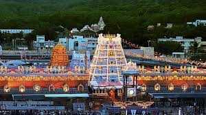
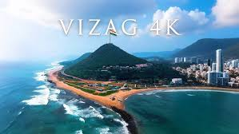
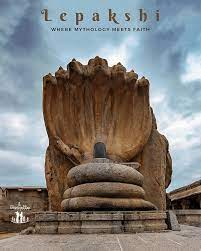
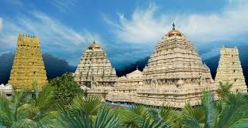

Tirupati

Home to the renowned Sri Venkateswara Temple, a major Hindu pilgrimage centre located on the sacred Tirumala hills, famous for its intricate architecture and spiritual ambiance.
Vishakapatnam(Vizag)

A bustling port city known for its beautiful beaches like RK Beach, the submarine museum (INS Kursura), and a blend of urban development and coastal charm.
Araku Valley

A serene hill station famous for its rich coffee plantations, tribal culture, lush green landscapes, and the stunning Borra Caves.
Lepakshi

A village known for its historical and archaeological significance, home to the 16th-century Veerabhadra Temple, famous for its captivating mural paintings and the mysterious 'hanging pillar'.
Srisailum

A major pilgrim centre, home to the Mallikarjuna Jyotirlinga Temple and Bhramaramba Temple, located in the Nallamala forests near the Krishna River, offering a mix of spirituality and nature.